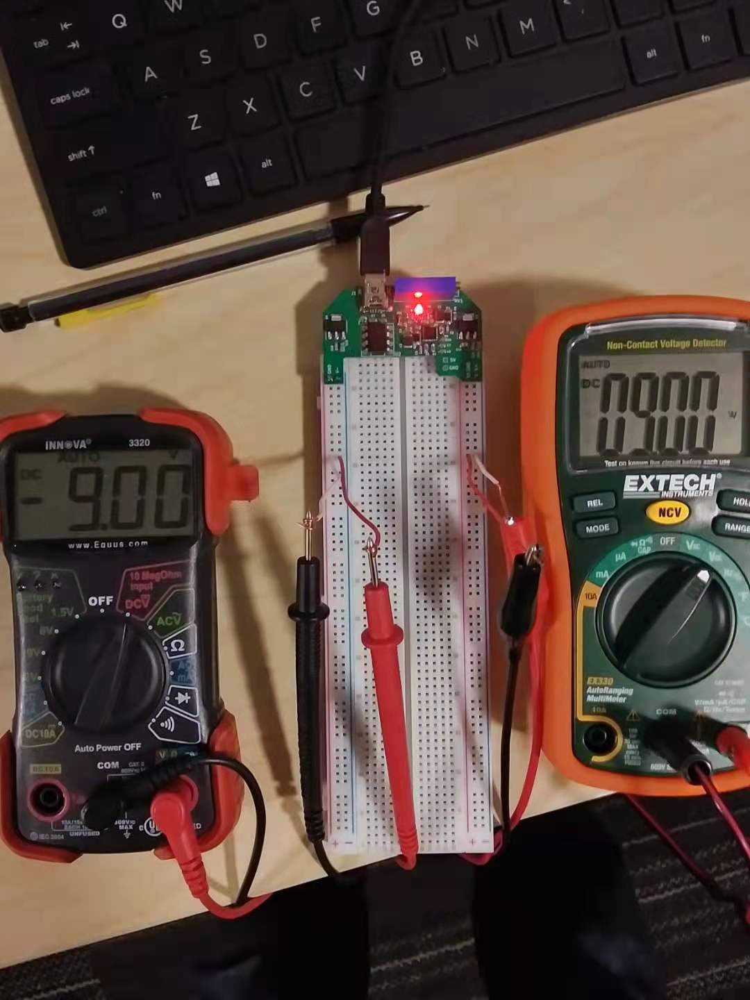

A lot of the introductory EE courses at the University of Washington require the use of two 9V batteries to power analog circuitry on a breadboard for labs, and the wires would always fall out of the breadboards. To pass the time during my first week back before courses started in my sophomore year, I designed a USB powered breadboard PSU that provides quiet dual supplies that can be adjusted from +-2V to +-15V and gave one to everyone on the electronics team in the Husky Satellite Lab: 